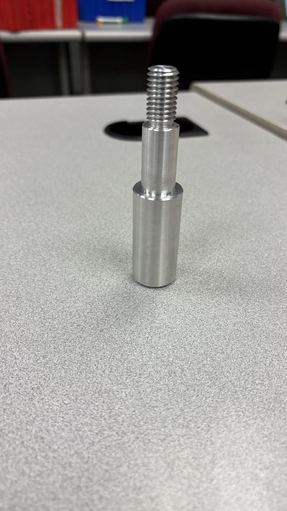
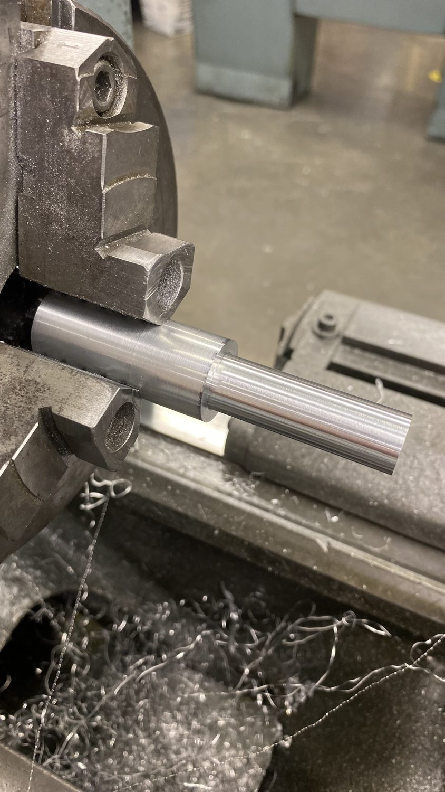
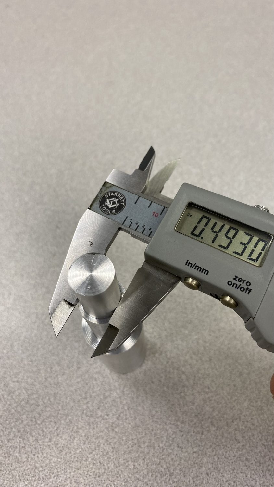
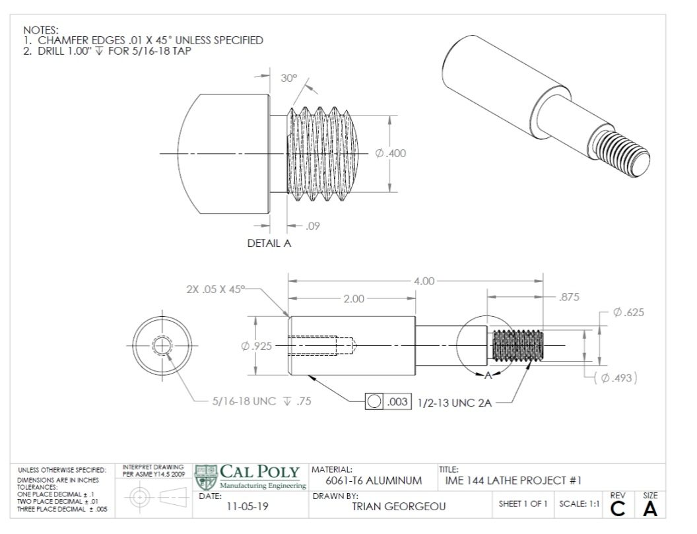

PROJECT 11 / 11 · IME · Machining
Precision Lathe Work
A manual-lathe machining lab part produced to a drawing and verified with calipers, IME manufacturing coursework.
ClassIME manufacturing lab
ProcessManual lathe
VerificationCaliper inspection
ReferenceEngineering drawing
Overview
A foundational machining exercise: turning a part on the manual lathe to match an engineering drawing, then inspecting critical dimensions with calipers to confirm the part met tolerance.
Highlights
- Manual lathe turning to drawing
- Caliper dimensional inspection
- IME manufacturing coursework
Gallery / 04 frames



